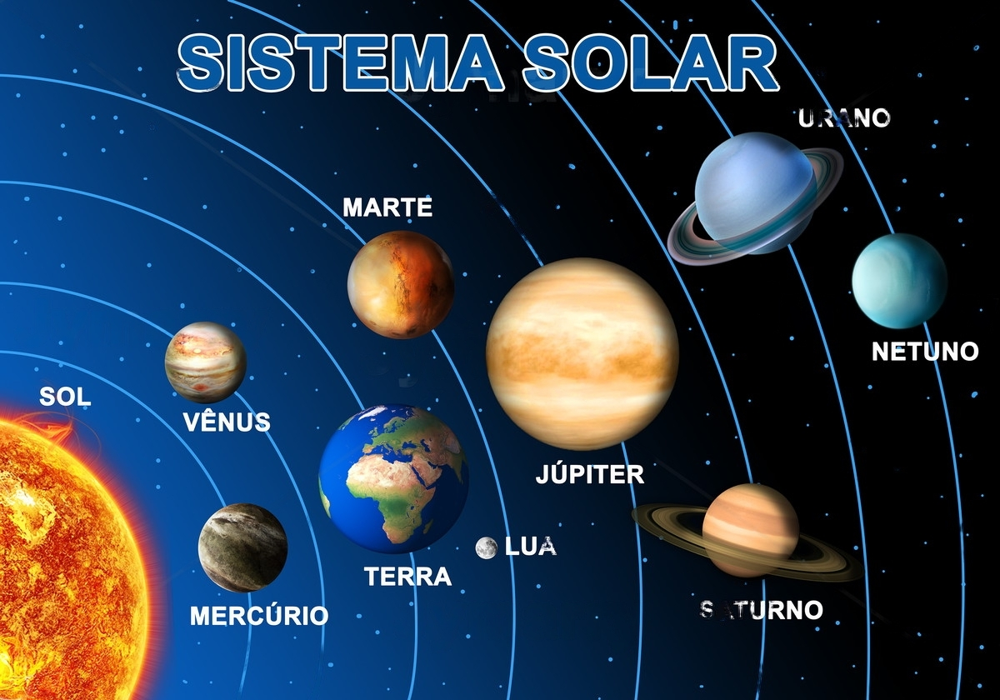

SISTEMA SOLAR.
O Sistema Solar é formado por corpos celestes que orbitam uma estrela (Sol). O nosso sistema solar é formado por oito planetas, nesta ordem:

O Sistema Solar é formado por corpos celestes que orbitam uma estrela (Sol). O nosso sistema solar é formado por oito planetas, nesta ordem: